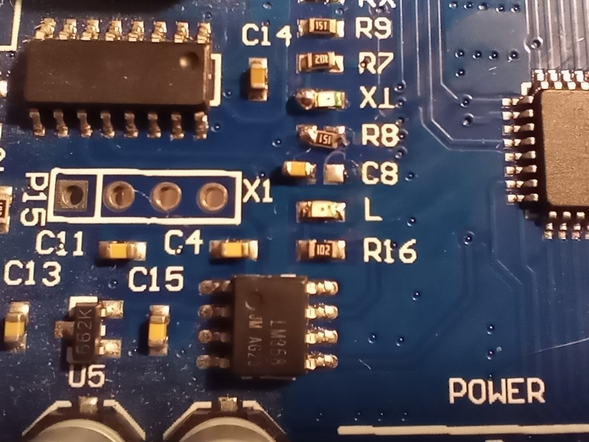
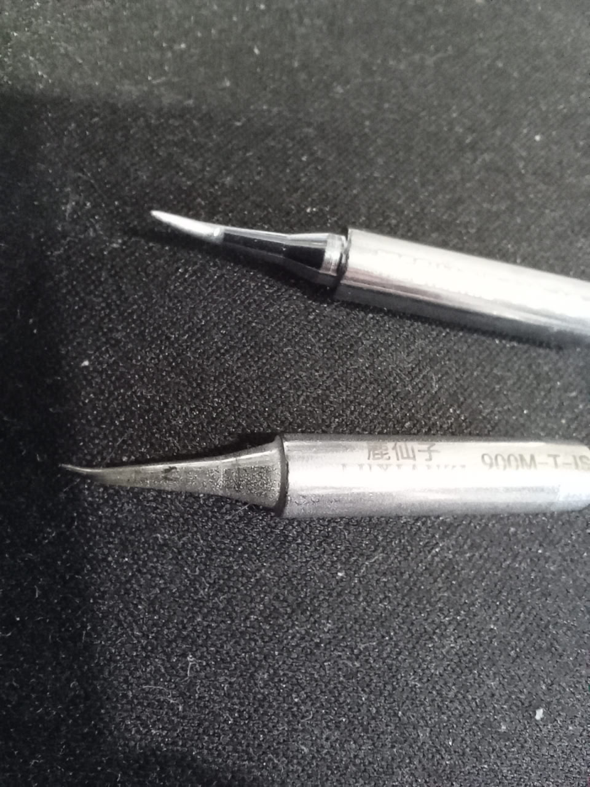
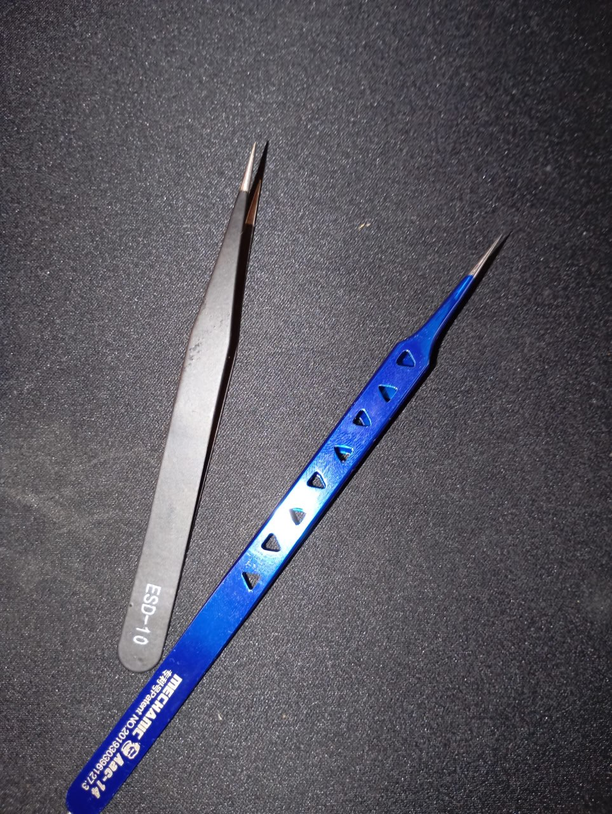

2026-03-21
23:34
На работе произошла незапланированная смена проекта и команды в начале
месяца. Пока погружаюсь в новый проект — времени ни на что не хватает,
все курсы пошли по бороде.
Язык — Java + Scala, но под боком есть команда с кодом на “плюсах”, надеюсь, выдастся случай написать пару строк. В общем, только на этой неделе более-менее начало появляться свободное время. Поэтому понемногу начинаю возвращаться к занятиям.
Я в новый год обрадовался возможности накодить что-то полезное на
ATtiny13A и завис на нём. Чего, конечно, очень сильно не
хватало, — так это возможности выводить какую-либо информацию для
дебага. Так что переезжаю в AVR-части своих экспериментов на
ATmega328P.
На «унах» есть преобразователь USB–UART, но с ним есть одна проблема, которая меня раздражает: авторесет при подключении.
Авторесет нужен для работы бутлоадера, но я пользуюсь внешним программатором, поэтому эта фича, по сути, бесполезна.
В принципе, можно просто перерезать дорожку, но я недавно заказал-таки подходящие тоненькие жала для паяльника и пару пинцетов и решил попрактиковаться в работе с SMD-компонентами.
План был — аккуратно перенести конденсатор, соединяющий USB–UART-чип с пином RESET.
Вооружившись феном, я успешно это проделал, но после — сшиб стоящий рядом резистор. 🙄
Попытавшись поставить на место резистор, — сшиб следующий по очереди светодиод. 🫠
На этом принцип домино, к счастью, работать перестал.
В общем, криво-косо, что-то да напаял до рабочего состояния. 😂 В результате понял, что надо тренироваться, и заказал наборы для пайки SMD. 💰

23:34

23:34
